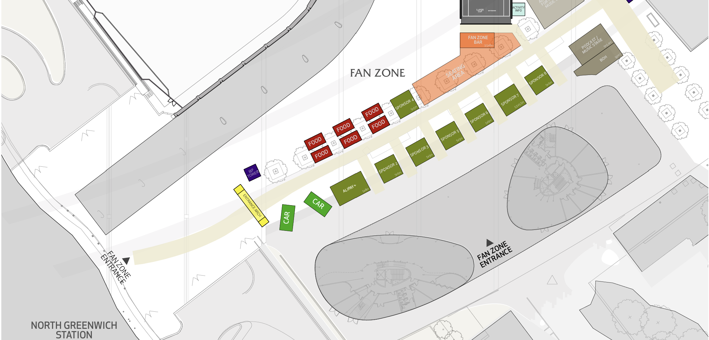
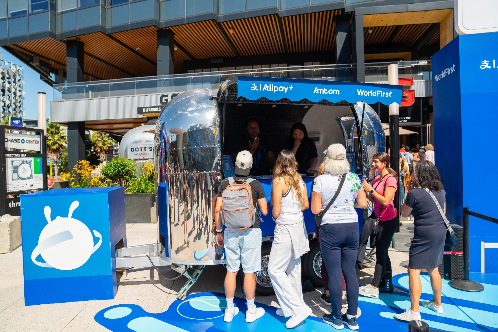
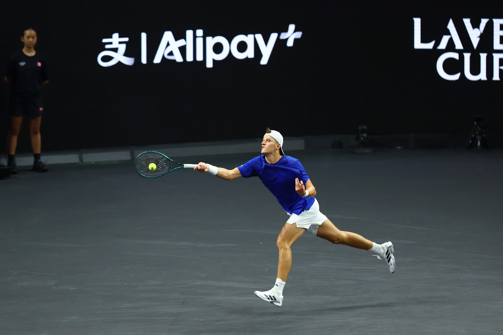
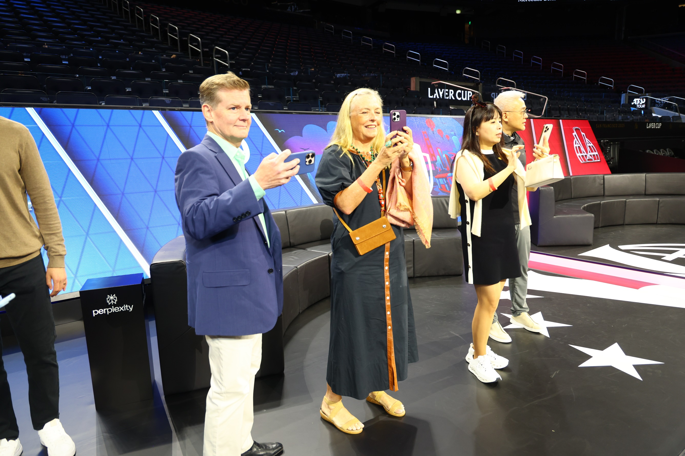
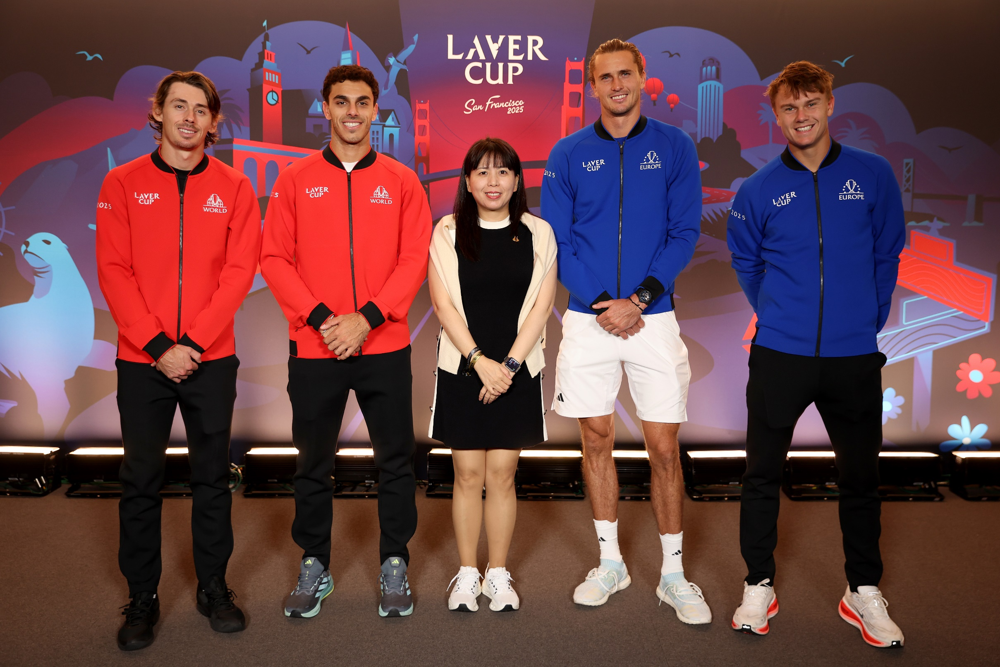
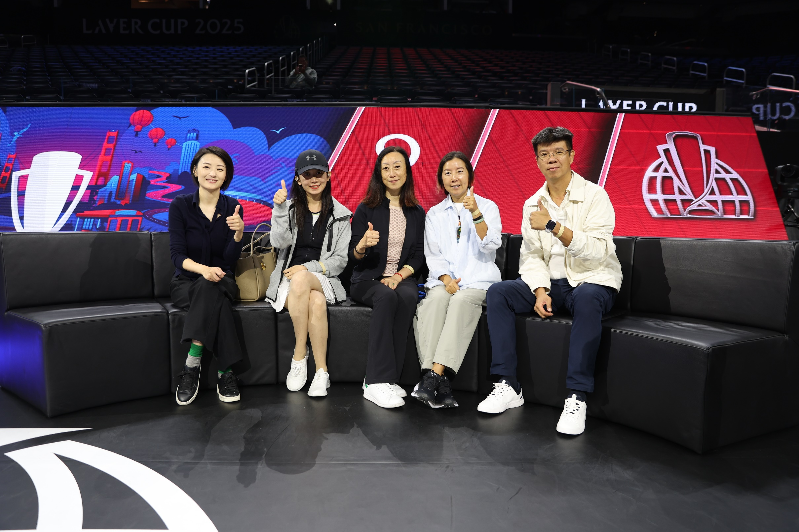
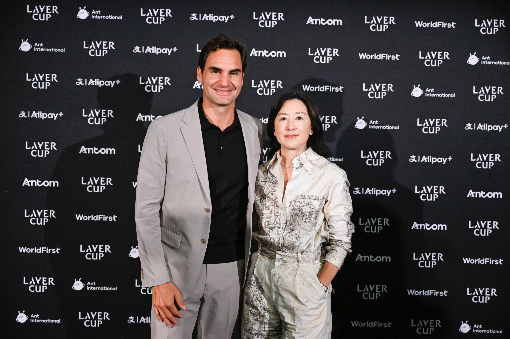
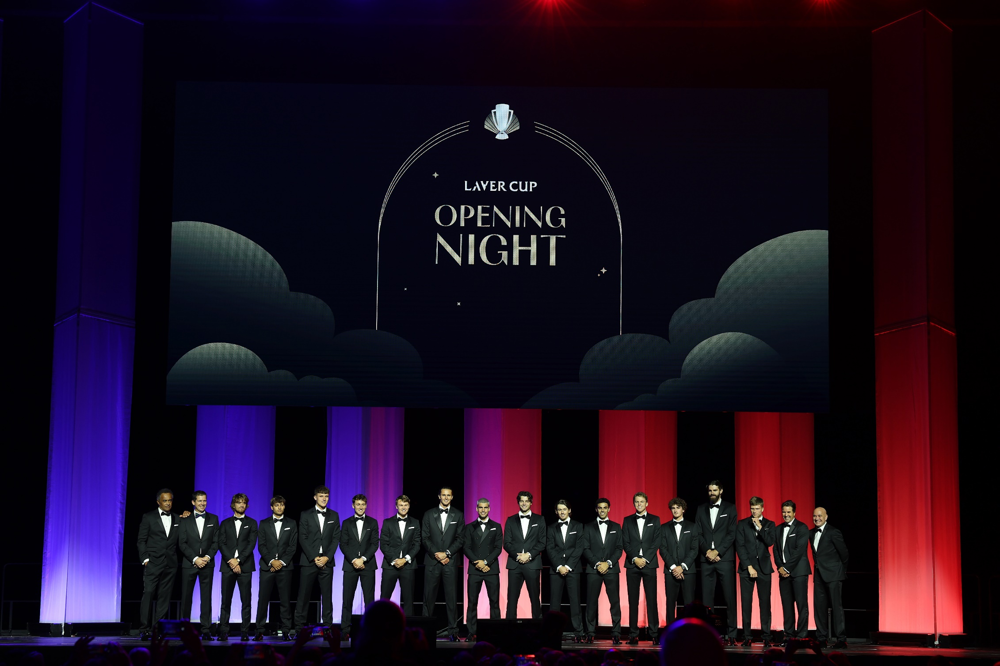
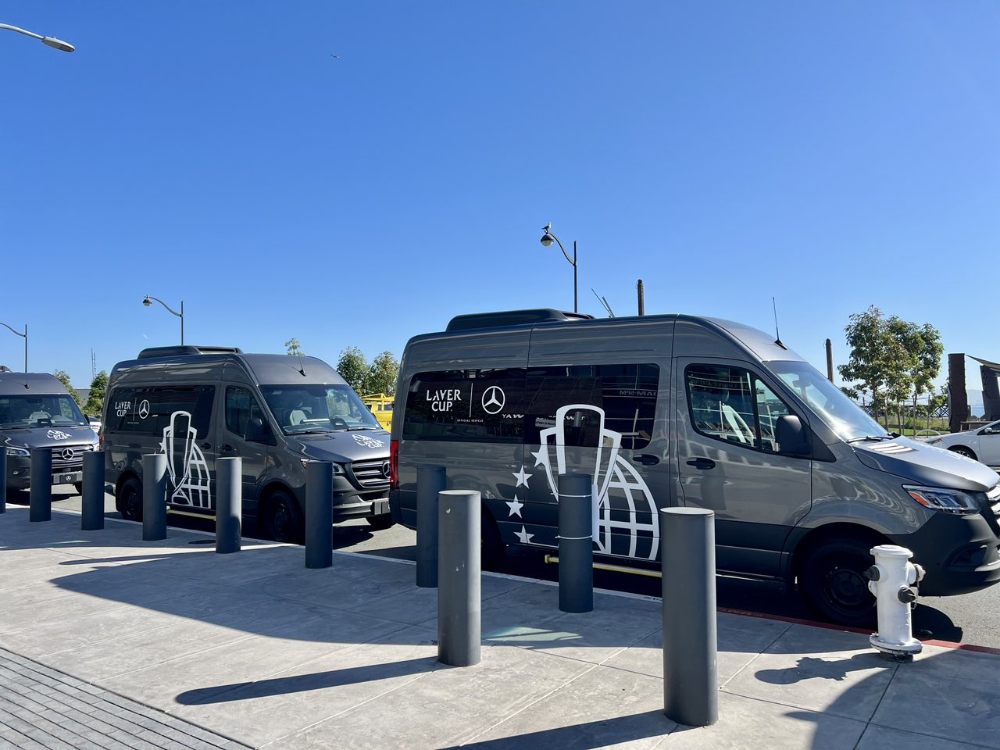
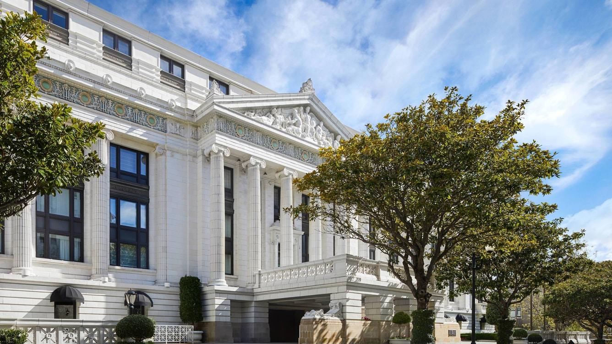

25–27 September 2026. During Laver Cup week · The O2, London. Part 1 runs one week earlier (≈ 16 Sept).
Five match sessions over three days, broadcast to 234 countries and regions. This part shows our real benefits, their exact limits, and where we can add red to a very blue picture.
No player images on our channels. No photos with players outside the VIP allocation. Carlos plays the tournament and does nothing else in the UK.
Quotas are not final and several numbers are still in discussion with the sponsorship team. Everything marked TBC gets confirmed before invites go out.
Our booth presence, our own people, our own banners, and the Laver Cup logo. The plan below is built only from these.
The fan zone is Ant International blue end to end. Our name rides along on the shared booth — last year's awning read Alipay+ · Antom · WorldFirst — and the 2026 plan marks one small "WF Tower". That's our entire ground presence. This is the thing we can change.
Fan zone runs 14–27 September (TBC) at the O2 entrance, by the Mercedes cars, with a Serve Challenge court — nearly two weeks of footfall between North Greenwich station and the arena doors. A digital tennis game on screen; KOLs can be invited; clients can drop by; our London employees can volunteer in red.


A blue OOH banner in London: Alcaraz, the Laver Cup × Alipay+ joint logo, consumer wallets message. Big traffic placements, tourist audience.
The same frame in WorldFirst red: a licensed Alcaraz image (stock purchase — background can go red; kit stays blue), the WF × Laver Cup joint lockup now under agent review, and one line: "The Road to WorldFirst." Placed near the blue banner and the O2 approach — red against blue IS the event's own language. Drives foot traffic on the ground; reused on web and social for the digital lift.
London OOH is expensive — placements, creative and budget sized with the UK team. The joint-lockup + Alcaraz single frame is exactly what the sponsorship team is clearing with the agent now.

Conclusion: our budget works the streets, the fan zone and our own channels — not the arena.

Friday morning, before Session 1 — and only for rights-ticket holders who hold Session 1. Court floor, players' areas.

Before Sessions 1–4, ~30 minutes ahead: 10 people per session, drawn from the 40. Which players turn up is a blind draw — Alcaraz is possible, never promised.

Final-day morning, before Session 5. Last year 40 were invited and 9 came — mornings are hard. Plan guests accordingly.
These tickets are the top hospitality tier (~£30k-class seats covering all five sessions). Every experience above exists only for their holders — say this clearly to every guest and every colleague, so nobody promises what a bought ticket can't deliver.

Saturday morning, C-level clients only. 60 seats total this year — and our own executives, the AAC and the group board take a large share, so WF's realistic count is small. Guests must be in London that morning; prioritise clients holding Saturday-afternoon (Session 3) tickets. Format per the organisers: Federer talks, then group and one-on-one photos, plus VIP gifting. PR piece around the flagship ambassador client; LinkedIn post if filming is allowed (TBC).

The night before play starts — both teams on stage in black tie, ~20 seats across ANI. WorldFirst realistically sends one or two senior people; leadership decides who. Not a client asset — the room where the sponsor family shows up.

Mercedes vans run airport pick-ups and the hotel ↔ arena shuttle — for rights-ticket guests, between the official hotels and the venue. Book client rooms at or near the official hotels so the shuttle works for them.

Last year the programme held rooms at the Ritz-Carlton at negotiated rates. The 2026 London hotel list hasn't landed — the moment it does, we match client bookings to it.
| Benefit | Numbers | Rules & notes |
|---|---|---|
| Federer breakfast | 60 seats ANI-wide; WF ~6 (TBC), pushing for more | C-level clients only, no KOLs. Saturday morning; prioritise Session-3 ticket holders. |
| VIP club (Rocky Club / Chairman's Reserve) | ~40 across ANI, pre-selected. WF share: 4–6 max | All five sessions + tour + player photos + courtside practice + Mercedes + hotels. Bought tickets get none of these. |
| Opening gala | 1–2 senior WF people | Leadership decision. |
| Coin toss / stage moment | 1 person across all of ANI | Not worth planning around — skip. |
| Purchased tickets | As many as we buy — incl. 5-session passes | For KOLs and extra guests; pool for a private ticket draw (never public marketing). No special experiences attached. |
| Signed items | Small quantity — to request | Carlos-signed items as gifts for top customers and ambassadors during the tournament period. Possible; needs the formal ask. |
| Employee 50% tickets | Scheme in progress (payment flow TBC) | Internal perk only — never offered to clients. |
Also confirmed: no WF photographer inside; ANI and Laver Cup manage all filming, with official shots shared after each day. Broadcast brand ads are not in our package.
Numbers firm up when quotas are confirmed and the commercial team signs off. The reporting rule stands regardless: every hospitality seat is reported on business return, not attendance.
One report after the tournament covers both acts — results first, reach second.
THE WARM-UP + LAVER CUP WEEK · WorldFirst UK · built from the sponsorship-team briefing, the official 2026 benefits deck and the team's planning calls · photos: official 2025 event photography & 2026 plans · quotas TBC